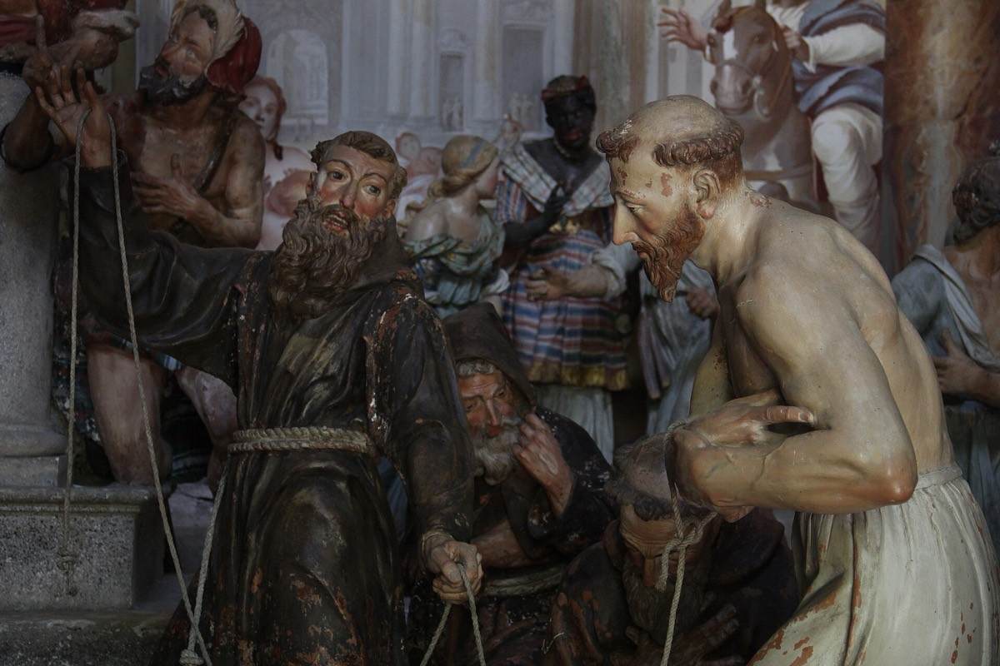

Most visitors to Orta San Giulio look out at the island and never look up. Directly above the village, on a wooded hill, stands the Sacro Monte di Orta: twenty chapels laid out along a shaded path, filled with life-size painted figures, and listed as a UNESCO World Heritage Site since 2003. It costs nothing to visit and it is twenty minutes from Piazza Motta.
What it actually is
A sacro monte — "sacred mountain" — is a devotional route built as a sequence of chapels, each staging one episode of a sacred story in three dimensions. They were built across Piedmont and Lombardy from the late sixteenth century onwards, and nine of them together form the UNESCO site "Sacri Monti of Piedmont and Lombardy".
Orta's is the odd one out, and the reason is worth knowing: it is the only sacro monte dedicated not to a biblical episode but to a saint — Francis of Assisi. Work began in 1590, funded largely by the Novara abbot Amico Canobio and laid out to a design by the Capuchin architect Cleto da Castelletto Ticino. Construction then ran on for the best part of two centuries, which is why the chapels drift stylistically as you climb.
The twenty chapels
Each chapel encloses a tableau: painted terracotta statues, close to life size, arranged in front of frescoed walls that continue the scene into the background. Together they contain around four hundred figures, most made in the seventeenth and eighteenth centuries, and the frescoes behind them are the work of a long line of Lombard and Piedmontese painters.
The effect is unlike a museum. You look through a grille into a room where a crowd is caught mid-gesture — arguing, kneeling, staring back at you. Some faces are plainly portraits of the people who lived here four hundred years ago.

Also on the hill is the church of San Nicolao, a proto-Romanesque building that predates the whole project and gives the site its anchor.
Getting there and opening hours
From Orta San Giulio the walk up takes about twenty minutes on a sloped road, paved and cobbled, with steps in places. It is a steady climb rather than a hard one, but it is a climb. There is a car park at the foot of the hill — cars only, no campervans or coaches.
In the 2026 season, from 29 March to 24 October, the chapels are open Monday to Friday from 9.30am to 6pm, and on Saturdays, Sundays and public holidays from 9.30am to 6.30pm. The church of San Nicolao is open daily from 9am to 6pm. Hours change from season to season, so check sacrimonti.org before you set out.
Entry is free. Donations are welcome, and guided tours are available for around €12 per person. The wooded park around the chapels is open regardless — even when the chapels themselves are shut, the walk and the views are there.
Accessibility
Be realistic about this one. The route is steps, slopes and cobbles, and it is genuinely difficult for wheelchair users. Visitors with disabilities are permitted to drive up as far as the church of San Nicolao, then return the car to the car park below. If accessibility shapes your planning, our wheelchair-friendly guide to Lake Orta covers what does and does not work around the lake.
When to go
Early morning or late afternoon. The chapels sit under mature trees, and in the middle of a summer day the light through the grilles is flat. Late in the afternoon it comes in low and the interiors turn warm. Autumn is arguably the best time of all up here — the wood turns and the crowds, such as they are, have gone.
Do not rush back down. There are viewpoints along the path where the whole lake opens up beneath you, with Isola San Giulio in the middle of it. It is the view that ends up on most people's camera roll, and they usually did not know it was there when they set off.
Making a morning of it
The Sacro Monte pairs naturally with the island: the boat across takes minutes, and the two together fill a morning without either feeling hurried. From Villa Volpe both are within walking distance — you can be at the foot of the hill before the first coach party has parked.